Model-based DRL for accelerated learning from flow simulations
Andre Weiner, Janis Geise, Chair of Fluid Mechanics
| 01 | simulation-based learning motivation and challenges |
| 02 | model-based learning DRL basics, model-based PPO |
| 03 | benchmark results flow past a cylinder, fluidic pinball |
simulation-based learning
motivation and challenges
closed-loop control benchmark, $Re=100$
evaluation of optimal policy (control law)
optimal sensor placement - R. Paris et al. (2021)
optimal actuator placement - R. Paris et al. (2023)
separation control, B. Font et al. (2025)
- LES, higher-order spectral elements
- 8 simulations in parallel
- 96 episodes (iterations)
- 6 days turnaround time
- 1152 GPUh (A100)
- $4$ EUR/GPUh $\rightarrow 5$ kEUR
Training cost DrivAer model
- $5$ hours/simulation (1000 MPI ranks)
- $10$ parallel simulations
- $100$ iterations $\rightarrow 20$ days turnaround time
- $20\times 24\times 10\times 1000 \approx 5\times 10^6 $ CPUh
- $0.01-0.05$ EUR/CPUh $\rightarrow 0.5-2$ mEUR
CFD simulations are expensive!
model-based learning
DRL basics, model-based PPO
reinforcement learning: sequential decision making (control) under uncertainty


 

experience tuple at step $n$ $$ (S_n, A_n, R_{n+1}, S_{n+1}) $$
trajectory over $N$ steps $$\tau = \left[ (S_0, A_0, R_1, S_1), \ldots ,(S_{N-1}, A_{N-1}, R_N, S_N)\right]$$
return - dealing with sequential feedback
$$ G_n = R_{n+1} + R_{n+2} + ... + R_N $$
discounted return $$ G_n = R_{n+1} + \gamma R_{n+2} + \gamma^2 R_{n+3} + ... \gamma^{N-1}R_N $$
$\gamma$ - discounting factor, typically $\gamma = 0.99$
learning what to expect in a given state
$$ L_V = \frac{1}{N_\tau N} \sum\limits_{\tau = 1}^{N_\tau}\sum\limits_{n = 1}^{N} \left( V_{\theta_v}(S_n^\tau) - G_n^\tau \right)^2 $$
- $\tau$ - trajectory (single simulation)
- $S_n$ - state/observation (pressure)
- $V_{\theta_v}$ - parametrized value function
- clipping not included
Was the selected action a good one?
$$\delta_n = R_n + \gamma V_{\theta_v}(S_{n+1}) - V_{\theta_v}(S_n) $$ $$\delta_{n+1} = R_n + \gamma R_{n+1} + \gamma^2 V_{\theta_v}(S_{n+2}) - V_{\theta_v}(S_n) $$
$$ A_n^{GAE} = \sum\limits_{l=0}^{N-n} (\gamma \lambda)^l \delta_{n+l} $$
- $\delta_n$ - one-step advantage estimate
- $A_n^{GAE}$ - generalized advantage estimate
make good actions more likely
$$ J_\pi = \frac{1}{N_\tau N} \sum\limits_{\tau = 1}^{N_\tau}\sum\limits_{n = 1}^{N} \frac{\pi_{\theta_\pi}(A_n|S_n)}{\pi_{\theta_\pi}^{old}(A_n|S_n)} A^{GAE,\tau}_n $$
- $\pi_{\theta_\pi}$ - current policy
- $\pi_{\theta_\pi}^{old}$ - old policy (previous episode)
- simplified (no clipping, entropy)
- $J_\pi$ is maximized
model-ensemble PPO (MEPPO) flow chart
auto-regressive surrogate models with weights $\theta_m$
$$ m_{\theta_m} : (\underbrace{S_{n-d}, \ldots, S_{n-1}, S_n}_{\hat{S}_n}, A_n) \rightarrow (S_{n+1}, R_{n+1}) $$
$\mathbf{x}_n = [\hat{S}_n, A_n]$ and $\mathbf{y}_n = [S_{n+1}, R_{n+1}]$
$$ L_m = \frac{1}{|D|}\sum\limits_{i}^{|D|} (\mathbf{y}_i - m_{\theta_m}(\mathbf{x}_i))^2 $$
How to sample from the ensemble?
- pick initial sequence from CFD
- generate model trajectories
- select random model
- sample action
- predict next state
Are the models still reliable?
- evaluate policy for every model
- compare to previous policy loss
- switch if loss did not decrease for
at least $N_\mathrm{thr}$ of the models
benchmark results
flow past a cylinder, fluidic pinball
references:
cylinder flow setup, $Re=100$
force coefficients
$$c_x = \frac{2F_x}{U_\mathrm{in}^2 A_\mathrm{ref}}\quad c_y = \frac{2F_y}{U_\mathrm{in}^2 A_\mathrm{ref}}$$
instantaneous reward
$$R_n = 3 - \left(c_{x,n} + 0.1|c_{y,n}|\right)$$

normalized training time (cylinder flow)
cumulative rewards (cylinder flow)
fluidic pinball setup, $Re=100$
cumulative force coefficients
$$c_x = \sum\limits_{i=1}^3 c_{x,i}\quad c_y = \sum\limits_{i=1}^3 c_{y,i}$$
instantaneous reward
$$R_n = 1.5 - (c_{x,n} + 0.5 |c_{y,n}|)$$
normalized training time (fluidic pinball)
cumulative rewards (fluidic pinball)
evaluation of optimal policy
force coefficients and actuation (optimal policy)
local velocity field
final remarks
future work will focus on
- end-to-end control design
- surrogate model improvement
- application to turbulent flows